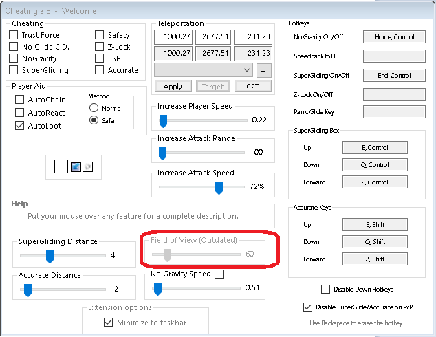
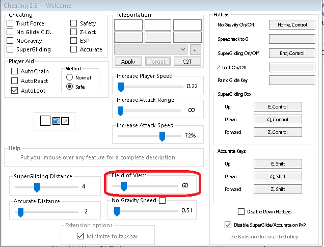

Page 1 of 1
cheating2.dll with FoV
Posted: Wed Feb 08, 2017 10:24 pm
by agonic
1. Rename existing Cheating2.dll to Cheating2.dll_
2. Place this DLL into the Extension folder.


Re: cheating2.dll with FoV
Posted: Thu Feb 09, 2017 1:51 am
by creatine
so... can u explain what is different with this one?
Re: cheating2.dll with FoV
Posted: Thu Feb 09, 2017 6:51 am
by agonic
FoV. Field of View. to use, on Cheatin 2.8 console, click Show Options and set Field of View. If you dont know anything about it, try and see